Beirut · 12+ years ago
One classroom
Founded on one belief: with the right preparation, any student can outperform what they think is possible.
TestPrep · by House of Prep
TestPrep · by House of Prep
Today
Opening film
Who we are
“Instruction should follow the student, not the other way around.”
Our legacy
Beirut · 12+ years ago
Founded on one belief: with the right preparation, any student can outperform what they think is possible.
TestPrep 2.0
A data-driven method that finds gaps, targets them and adapts until the student reaches the target score.
Today
TestPrep is part of House of Prep: a second home for learning, from school to university.
Our numbers
Across Lebanon and the region.
From one classroom to a full system.
Schools and institutions that work with us.
House of Prep
House of Prep is a second home for learning. Four brands, each built for a different moment in a student's life.
The TestPrep platform is powered by Elmy.
Chapter 03
The test Nizar had never heard of, explained in two minutes.
What is the SAT?
Top score · range 400–1600
Short passages. Vocabulary in context, grammar, and what a text is really saying.
Algebra, problem solving, data and geometry. A Desmos graphing calculator is built in.
On a laptop or tablet, in the Bluebook app.
The second module of each section adjusts to how you did on the first.
Total testing time, plus a 10-minute break.
Offered several times a year. Many students take it more than once.
Why do students take it?
Many universities in the US and around the world use it to compare applicants from different schools and countries.
A strong score can strengthen merit scholarship and financial aid applications.
Your grades come from your school. The SAT puts every applicant on the same scale.
Good to knowRequirements differ by university and by country. Check each one you apply to. That's exactly what WeGuide helps with.
Chapter 04 · How we work
The TestPrep Performance Engine: seven steps that turn effort into a score. Every student starts in a different place, so no two plans look the same.
The TestPrep Performance Engine
Powered by Elmy

Live game · whole room
This is Nizar's study week. He works hard every day. What's wrong with it?
Shout it out. Every glitch you find shows the step that fixes it.
0 of 7 found
Live game · one volunteer
Your next move
Scan the code and tell us where you're starting from. We'll take it from there.

2 minutes · for you and your school